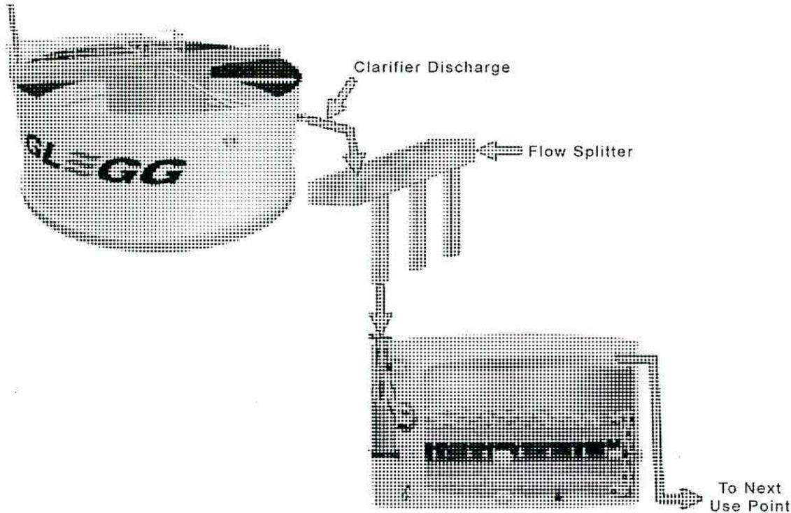
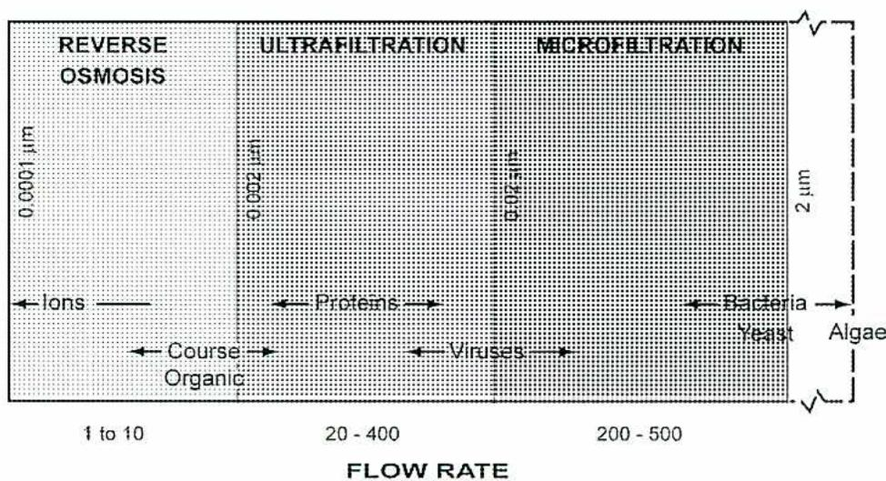
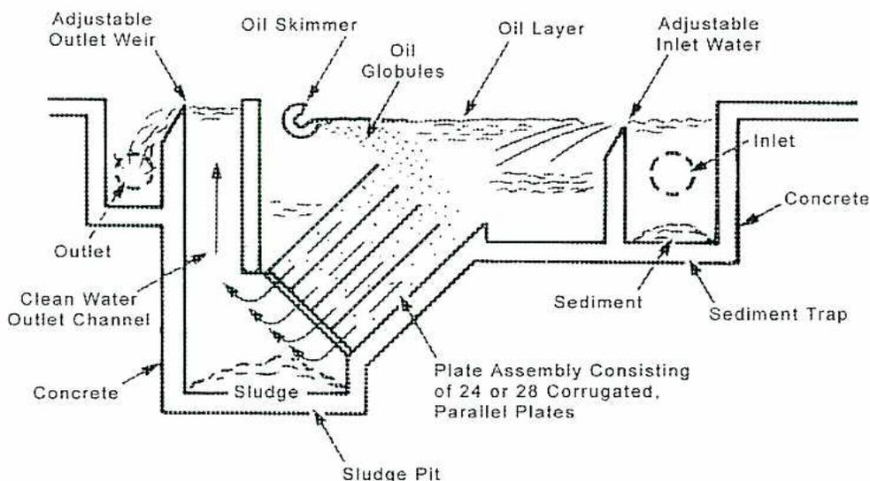
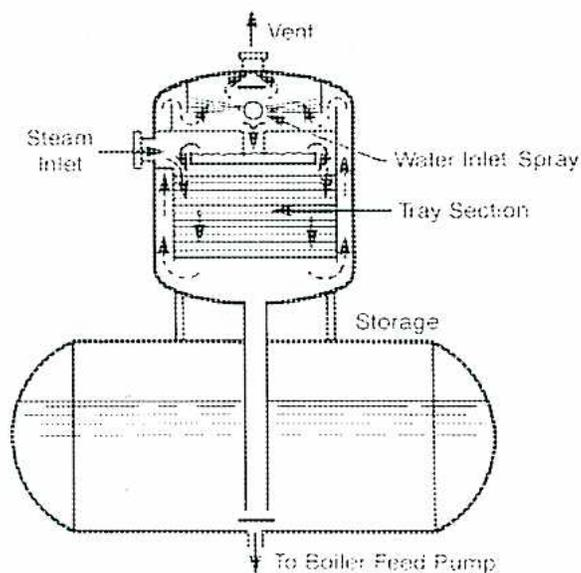
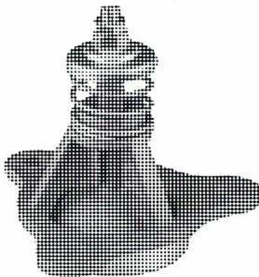

Water Pretreatment I
7
Learning Outcome
When you complete this learning material, you will be able to:
Describe water pre-treatment processes for removal of oil, gases, and suspended solids.
Learning Objectives
You will specifically be able to complete the following tasks:
- 1. Explain the purpose, equipment, operation, and limitations of sedimentation.
- 2. Explain the purpose, equipment, operation, and limitations of coagulation and flocculation.
- 3. Explain the purpose, equipment, operation, and limitations of filtration.
- 4. Explain the purpose, principles, equipment, operation, and limitations of microfiltration.
- 5. Describe how oil is removed from water.
- 6. Explain the purpose, equipment, operation, and limitations of mechanical deaeration.
- 7. Explain the purpose, equipment, operation, and limitations of evaporation.
Objective 1
Explain the purpose, equipment, operation, and limitations of sedimentation.
SEDIMENTATION
Material in suspension in water, or recently deposited from suspension, is referred to as sediment . In the plural, the word is applied to all kinds of deposits from the waters of streams, lakes, rivers, or seas. The process of separating a suspension by gravity into clear fluids and slurry of solids is called sedimentation .
Sedimentation of Turbid Waters
Sedimentation is a water treatment process that allows the settling of suspended particles in turbid or cloudy water. Sedimentation allows the water to clarify, or clear up, by permitting the suspended matter to settle, and thereby reduces the turbidity (cloudiness) of the water. Sedimentation is used to remove coarse particles that quickly settle out under the influence of gravity. The treatment process called coagulation more effectively removes fine particles.
Surface waters are prone to pick up large amounts of particulates in the spring or rainy season of the year. When the rivers leave their beds and flood large areas, organic particulates, like debris from forests and fields, contaminate the water and must be removed. Initially, this organic debris is less dense than water and floats on the surface. In time, the debris becomes water logged and sinks.
Organic debris is large in surface area and is easily skimmed or filtered off without the need for much technology or treatment. Disease-causing bacteria are often associated with this form of debris. It must be removed and the water chlorinated especially if the water is used for drinking purposes.
Finely powdered rock or soil particles, found in run-off water, are usually about 2.5 times the density of water. They settle out quickly, but fast-running water, with its attendant turbulence, keeps particles in suspension for hundreds and sometimes thousands of kilometres of river system.
Fast-flowing rivers flow into slow-moving lakes, dammed reservoirs, or wide deltas, where settling of the fine rock particles can take place. However, wind and water traffic can cause turbulence and mixing.
Settling may never occur. Coagulation is required to increase the settling speed. Coagulants are chemicals that cause the fine particles to gather together into a larger mass, which will settle out much more quickly.
EQUIPMENT
The sedimentation process can take place in a settling pond or in tanks (Fig. 1). These sedimentation tanks may be round, square, or rectangular. The ponds and tanks are designed for very slow water flow, with a minimum of turbulence at the inlet and exit points. The water should not be short-circuited or by passed from the inlet to the outlet. Provisions are often made to remove the sludge (accumulation of waste material) from the bottom of the basin. Sludge is removed from ponds by dredging.
![Figure 1: Flow Patterns of Sedimentation Basins. The figure contains five sub-diagrams labeled A through E. A. Rectangular Settling Tank, Rectilinear Flow: Shows a rectangular tank with 'Influent' entering from the left and 'Effluent' exiting to the right. Arrows indicate a straight flow path. 'Effluent Launder' is shown at the exit. B. Peripheral-Feed Settling Tank, Spiral Flow: Shows a circular tank with 'Influent' entering from the bottom. Arrows show a spiral flow pattern. It includes a 'Skirt', 'Tank Wall', 'Effluent' exit on the right, and a 'Launder' at the bottom. C. Center-Feed Settling Tank, Radial Flow: Shows a circular tank with 'Influent' entering from the bottom. Arrows show flow moving radially outward from the center. It includes a 'Launder' at the top and 'Effluent' exit on the right. D. Square Settling Tank, Radial Flow: Shows a square tank with 'Influent' entering from the bottom. Arrows show flow moving radially outward from a central point. It includes a 'Distribution Wall', 'Effluent' exit on the right, and a 'Launder' at the bottom. E. Square Settling Tank, Radial Flow: Shows a square tank with 'Influent' entering from the bottom. Arrows show flow moving radially outward from a central point. It includes a 'Distribution Wall', 'Effluent' exit on the right, and a 'Launder' at the bottom.](69edc2887e907309499ac95b47ab6905_img.jpg)
Rectilinear Flow
Influent
Effluent
Effluent Launder
A. Rectangular Settling Tank, Rectilinear Flow
Skirt
Tank Wall
Effluent
Launder
Influent
D. Peripheral-Feed Settling Tank, Spiral Flow
Launder
Effluent
Influent
B. Center-Feed Settling Tank, Radial Flow
Effluent
C. Peripheral-Feed Settling Tank, Radial Flow
Distribution Wall
Effluent
Influent
E. Square Settling Tank, Radial Flow
Figure 1
Flow Patterns of Sedimentation Basins
Objective 2
Explain the purpose, equipment, operation, and limitations of coagulation and flocculation.
COAGULATION
Removal of suspended solids from water is seldom accomplished by sedimentation alone. Removal is often accomplished by a series of steps including coagulation, flocculation, and sedimentation. The final effluent is usually filtered to remove any particles missed in these processes.
Particles in water have a charge associated with them. It is predominantly a negative charge. Coagulation is the process of neutralizing these charges. When a coagulant mixes with the inlet water, it neutralizes the charges and the particles clump together to form tiny visible particles called microfloc. Once the charges have been neutralized, the particles no longer repel each other. They are then brought together into larger particles for flocculation and sedimentation.
Four widely used coagulants are: aluminium sulphate (alum), ferrous sulphate, ferric chloride, and lime. Alum is the most commonly used coagulant because it is the lowest cost. Alum, ferrous sulphate, and ferric chloride in liquid state are metered to the clarifier as slurry. They can be fed upstream of the clarifier for added mixing, or directly into the mixing area of the clarifier.
Table 2
Common Coagulants
| Coagulant | Popular or Trade Name | Chemical Formula | Usual Optimal pH Range |
|---|---|---|---|
| Aluminium Sulphate | Filter Alum | \( \text{Al}_2(\text{SO}_4)_3 \cdot 14 \text{H}_2\text{O} \) | 5.5 – 7.5 |
| Ferrous Sulphate | Copperas | \( \text{FeSO}_4 \cdot 7\text{H}_2\text{O} \) | 8.0 – 11.0 |
| Ferric Sulphate | Ferrifloc, Ferriclear or Ferrisul | \( \text{Fe}_2(\text{SO}_4)_3 \cdot 2\text{H}_2\text{O} \) or \( \text{Fe}_2(\text{SO}_4)_3 \cdot 3\text{H}_2\text{O} \) |
8.0 – 11.0
(5.0 – 6.0 for colour removal) |
| Calcium Hydroxide | Hydrated Lime | \( \text{Ca}(\text{OH})_2 \) | 10.0 – 11.0 |
The choice of coagulant depends on influent water chemistry and the clarification process following coagulation. Alum clarification and cold lime softening are two
An appropriate polymer for each specific water type and application is based on jar testing and field trials. Normally, the minimum amount of polymer that will do an adequate job is used. Overfeeding of polymers can cause problems in downstream equipment. Cationic polymer, for example, can foul cation resins. Advantages of using polymers for coagulation include:
- • Broadening the pH range over which coagulation occurs
- • Eliminating pin floc (minute floc particles) carryover from the sedimentation unit
- • Improving settling rates resulting in better quality outlet water
The most commonly used coagulant aides are high molecular weight anionic polymers. The polymer bridges the small floc particles causing them to form larger particles. The larger particles settle out more quickly.
EQUIPMENT
Clarification equipment has to accommodate several distinct processes. These include:
- • Rapid mix for coagulation
- • Moderate mixing for flocculation
- • Floc and water separation
- • Collection and disposal of sludge
![A schematic diagram of a water treatment process using separate tanks. The flow starts with 'Raw Water' entering a 'Rapid-Mix Basin' where 'Coagulants and Coagulant Aids' are added. The water then moves to a 'Flocculation Basin'. From there, it enters a 'Sedimentation Basin'. 'Sludge' is removed from the bottom of the sedimentation basin, and 'Wash Water' is added to it. The clarified water from the top of the sedimentation basin goes to 'Filters'. 'Disinfection Chemicals' are added to the water after it passes through the filters. The filtered water then enters a 'Clearwell' which is equipped with 'Backwash Pumps'. The final output is 'To Distribution'.](ca5566458a134032dd860e88fdaa0d2b_img.jpg)
graph LR
RawWater[Raw Water] --> RapidMix[Rapid-Mix Basin]
Coagulants[Coagulants and Coagulant Aids] --> RapidMix
RapidMix --> Flocculation[Flocculation Basin]
Flocculation --> Sedimentation[Sedimentation Basin]
Sedimentation -- Sludge --> Sludge[Sludge]
Sedimentation -- WashWater[Wash Water] --> WashWater
Sedimentation --> Filters[Filters]
Disinfection[Disinfection Chemicals] --> Filters
Filters --> Clearwell[Clearwell]
Clearwell -- BackwashPumps[Backwash Pumps] --> ToDistribution[To Distribution]
Figure 3
Separate Tanks for Each Process
The processes can be completed in separate tanks as shown in Fig. 3, or in a round clarifier with separate zones as in Fig. 4.
Objective 3
Explain the purpose, equipment, operation, and limitations of filtration.
FILTRATION
When conditioning water for industrial uses, coagulation and sedimentation can produce adequate quality for most purposes. However, most treatment plants incorporate filters to clean up any particulates that may slip through the clarifications steps. The three most common types of filters are gravity filters, pressure filters, and cartridge filters.
The dirty input water (influent) passes through a filter media. As the water passes through the media, the impurities are held in the filter media material. Depending on the impurity and the media, several different physical and chemical mechanisms are active in removing impurities from the water. Some of the equipment used to employ these mechanisms has changed dramatically over time. Other systems, such as depth filters, have undergone very little change.
The fundamental physical and chemical mechanisms that occur during filtration have advanced so that treatment specialists can optimize the removal of impurities from the water. Filtration systems remove particulate matter, and because of the large surface area of the filter media, they can also be used to drive chemical reactions that result in the removal of several contaminants.
Types of filtration include:
- • Occlusion: removal due to the impurity's particle size
- • Adsorption: removal due to the impurity's adherence to the media
- • Reduction: removal of free residual chlorine through conversion to chloride ions in the presence of activated carbon media
- • Oxidation: removal of iron and manganese using oxidation, precipitation, and filtration in the presence of greensand (zeolite) media
Occlusion
The filtration of suspended solids by occlusion removes particles based on size. It is a form of mechanical straining of the water. Particles are occluded, or held back, due to their inability to pass through the pores of a barrier. The barrier might be a packed bed of sand, a fiber mat, or a membrane surface. Filtration by occlusion is often called
The term depth filtration generally refers to filtration that occurs by the adsorption of suspended particles onto the surface of the media throughout the media layer. The entire thickness of the media layer is used, instead of just the media bed surface (surface filtration or occlusion). During surface filtration, only the inlet surface of the media bed is actually removing particles.
![Figure 6: Filtration by Straining/Adsorption. The diagram is split into two panels. The left panel, titled 'Mechanical Straining', shows 'Raw Water' (represented by two downward arrows) passing through a bed of circular media particles. Large, dark, irregular particles are shown getting stuck in the gaps between the media particles. Below this, the text reads: 'Large particles become lodged and cannot continue downward through the media.' The right panel, titled 'Adsorption', shows 'Raw Water' passing through a similar bed. Here, smaller dark particles are shown sticking to the surfaces of the media particles. Below this, the text reads: 'Particles stick to the media and cannot continue downward through the media.'](9ebd85380ef496499e5f23ec0d9cd744_img.jpg)
Figure 6
Filtration by Straining/Adsorption
FILTER MEDIA
Vessels with sand or other loose filtration media are widely used in industrial filtration applications. These filters are cleaned using a backwash flow. During a backwash cycle, the filter bed is lifted and fluidized with a reverse flow to remove accumulated particles. After the backwash cycle, the filter bed media will classify, meaning the heaviest media particles settle first at the bottom, and then the lightest particles settle on top.
A single media (sand) filter bed will classify differently than a multi-media filter. Since all sand particles in a single media bed have the same density, the largest particles are heaviest, and the smallest are lightest. Larger/heavier particles settle at the bottom, while the smaller/lighter particles settle on top. This does not provide efficient filtration capacity since filtration occurs mostly at the upper surface of the filter bed where the spaces between media particles are smallest. If a particle makes it past the top layer of media, nothing in the rest of the bed is likely to stop it because the spaces get larger farther into the bed. This phenomenon significantly reduces the amount of time between backwash cycles and is an inefficient use of the filter bed.
plenum, collects the filtered water. A transfer pipe delivers the water from the plenum to the backwash storage (top) compartment. Both the plenum (underneath the false bottom) and the center (filter) compartment have manways for construction and maintenance access.

The diagram illustrates the flow of water from a clarifier or softener to a gravity filter. On the left, a large cylindrical tank represents the clarifier/softener. An overflow pipe, labeled 'Clarifier Discharge', exits from the side of the tank and leads to a 'Flow Splitter' device. The flow splitter is a horizontal pipe with three downward-pointing outlets. These outlets lead into three separate rectangular tanks, which represent sand filters. The middle tank is shown in cross-section, revealing internal components like a 'Backwash' pipe and a 'To Next Use Point' outlet at the bottom right. Arrows indicate the direction of water flow throughout the system.
Figure 8
Clarifier/Softener Discharging to a Gravity Filter
Fig. 8 shows the arrangement of a clarifier or softener discharging into gravity filters. The flow from the clarifier outlet overflows into a flow splitter device. It splits the flow into three equal flows for three separate sand filters. Two filters handle the flow when the third filter is backwashing.
Pressure Filters
Pressure filters differ from gravity filters in that the water is pumped through the filter media. Because the filter operates under pump discharge pressure, the shell of the filter is a pressure vessel. The vessels that have dished heads may be vertical or horizontal. The main parts of a pressure filter are the filter media, supporting bed, underdrain system, and control devices. The filters are usually installed in pairs, so one can be in service while the other one is backwashing. A timer, flow meter, or differential pressure switch initiates the backwash.
A multi-media filter is a pressure filter with several different layers of filter media. It is the most common pressure filter used in industrial water treatment systems. Fig. 9 shows a typical multi-media filter system. These filters are often used in conjunction with a
Another type of filter media is greensand. It is a natural form of zeolite. It can remove iron and manganese from water when it is regenerated with a solution of potassium permanganate.
Objective 4
Explain the purpose, principles, equipment, operation, and limitations of microfiltration.
MEMBRANE PROCESSES
Membrane processes operate by applying pressure to the raw water. Water pressure forces water molecules through a membrane. The openings, or pores, in the membrane allow the water to pass through and prevent larger sized particles from passing through. The four membrane processes are classified by the amount of impurities the membrane allows to pass through. The processes are:
- • Microfiltration
- • Ultrafiltration
- • Nanofiltration
- • Reverse osmosis

The diagram illustrates the relationship between membrane types, particle sizes, and flow rates. It is divided into three main sections: REVERSE OSMOSIS, ULTRAFILTRATION, and MICROFILTRATION. The vertical axis represents particle size in micrometers (μm), with markers at 0.0001 μm, 0.002 μm, 0.1-20 μm, and 2 μm. The horizontal axis represents flow rate, with ranges of 1 to 10, 20 - 400, and 200 - 500. Various particles are shown to be removed by specific membrane types: Ions and Course Organic are removed by Reverse Osmosis; Proteins and Viruses are removed by Ultrafiltration; Bacteria, Yeast, and Algae are removed by Microfiltration.
| Membrane Type | Particle Size Range (μm) | Flow Rate Range | Particles Removed |
|---|---|---|---|
| REVERSE OSMOSIS | 0.0001 | 1 to 10 | Ions, Course Organic |
| ULTRAFILTRATION | 0.002 to 0.1 | 20 - 400 | Proteins, Viruses |
| MICROFILTRATION | 0.1 to 2 | 200 - 500 | Bacteria, Yeast, Algae |
Figure 10
Applications of Membrane Filtration
Fig. 10 shows the size of particles removed by each type of filter membrane. Particle size is measured in micrometers \( \mu\text{m} \) . ( \( 1 \mu\text{m} = 0.001 \text{ mm} \) ) Reverse osmosis (RO) or nanofiltration may be used to remove dissolved solids. Often microfiltration or ultrafiltration are used upstream of reverse osmosis to protect the RO membranes.
![Diagram illustrating the principles of osmosis and reverse osmosis. The diagram is divided into two parts: OSMOSIS and REVERSE OSMOSIS, separated by a SEMIPERMEABLE MEMBRANE. In the OSMOSIS part, a 'Concentrated Solution' on the left and a 'Dilute Solution' on the right are shown. The liquid level is higher on the concentrated solution side, and the difference in height is labeled 'Osmotic Pressure'. In the REVERSE OSMOSIS part, the same solutions are shown, but an 'Applied Pressure' is exerted on the concentrated solution side, causing the liquid level to be lower than on the dilute solution side.](cfef993dcc8fb513de79eb1f93cf26ae_img.jpg)
Figure 11
Reverse Osmosis
Fig. 11 illustrates the principles of osmosis and reverse osmosis. A semi-permeable membrane separates the two solutions. The solutions will tend to become equal in molecular concentration. The water molecules will naturally flow from a weaker to a stronger solution. The water exerts a pressure on the membrane called osmotic pressure.
Applying pressure to the concentrated solution can reverse the process. The pressure has to be greater than the solution's osmotic pressure. This process is called reverse osmosis. The water molecules pass through the membrane from the concentrated solution leaving the larger molecules behind. This produces a dilute solution, the purity of which depends upon the size of the molecules allowed to pass through the membrane.
EQUIPMENT
Equipment for membrane processes looks like cartridge filters or stacks of filters. Pumps supply water at the required pressure to the filters and membranes. The pressure is usually controlled upstream of the membranes. The filters, pumps, and controls are often packaged together as skid mounted units as shown in Fig. 12. To protect the membranes, the controls must reduce spikes in flow and pressure.
Objective 5
Describe how oil is removed from water.
OIL IN BOILER AND COOLING TOWER WATER
Oil must be kept out of boiler water. It causes boiler water to foam, resulting in poor steam quality from carryover (carryover of boiler water with the steam). The oil will also deposit in the tubes and form sludge and deposits.
Normally, oil will not get into the boiler water as it is removed in demineralizer and membrane systems that produce boiler feedwater. It is common procedure to remove all but trace amounts of oil before the boiler feedwater reaches the resins or membranes because the oil fouls demineralizer resin and clogs the pores in membranes.
Oil can also get into cooling water systems. Sources of oil contamination include:
- • Makeup water to the tower.
- • Lube oil systems in the cooling water circuit. These include turbine and compressor lube oil consoles with oil coolers. Often, fans and large pieces of rotating equipment have lube oil systems.
- • Process heat exchanger leaks. This can happen if the process pressure is higher than the cooling water pressure.
Oil in cooling water systems will form sludge in the cooling water basin. The basin is cleaned out when the plant is down and the water has been drained. The oil may also deposit in cooling water exchangers in the shell side. It is a more serious problem if deposits form on the inside or outside of heat exchanger tubes. Corrosion will occur under these deposits. Eventually, the corrosion can result in tube leaks.
Filtering the makeup water can reduce oil entering the cooling system. Oil in the cooling water may be filtered out by sidestream filters attached to the cooling water circuit.
Oil Removal (Small Amounts)
Small amounts of oil in the makeup water to a treatment plant are removed in the normal pre-treatment process. For example, a coagulator clarifier (similar to Fig. 4.) will reduce the oil content in the inlet water from 10 mg/L to 0.5 mg/L in the effluent water. This reduction is similar for cold lime softeners and lamella clarifiers as well. Lamella clarifiers have a separate mix tank and an inclined plate tank for sedimentation.
EMULSIONS
Emulsification is the process by which one liquid is dispersed into another in the form of tiny droplets. In an oil and water mixture, either liquid may be dispersed in the other. There are two types:
- • Oil emulsified in water (O/W): appears as oily or dirty water. A drop of emulsion added to water disperses, or mixes, with the water.
- • Water emulsified in oil (W/O): a thick and viscous solution. A drop of emulsion added to water does not disperse. It remains as a thick solution floating on the surface.
Emulsions are not commonly found in makeup water such as river, lake, or well water. They are common in industrial wastewaters, especially in the petroleum industry. The concentration of oils in wastewater may vary from only parts per million to 5% to 10% by volume.
Removal of Emulsions
Removal of emulsified oil is a two-step process. The first step is to separate and remove the free nonemulsified oil. The second step is the chemical treatment and removal of the emulsified oil.
Mechanical Emulsion Breakers
There are two types of separators that are often used to separate the free oil. They are CPI (corrugated plate interceptor) and API (American Petroleum Institute) separators. Both remove oil by gravity separation.

The diagram illustrates the internal structure and flow of a Corrugated Plate Interceptor (CPI) oil separator. On the right, 'Adjustable Inlet Water' enters through an 'Inlet' into a 'Sediment Trap' located at the bottom right. The water then flows leftward through a 'Plate Assembly Consisting of 24 or 28 Corrugated, Parallel Plates'. As the water moves through the plates, 'Oil Globules' rise and coalesce into an 'Oil Layer' at the top. An 'Oil Skimmer' is positioned at the top center to remove this oil. At the bottom left, 'Sludge' settles into a 'Sludge Pit'. The remaining 'Clean Water' flows over an 'Adjustable Outlet Weir' and into a 'Clean Water Outlet Channel', exiting through an 'Outlet'. The entire unit is housed in a 'Concrete' structure.
Figure 15
CPI Oil Separator
Objective 6
Explain the purpose, equipment, operation, and limitations of mechanical deaeration.
FUNCTIONS OF DEAERATORS
Deaerators are an integral part of steam cycles. They serve three primary functions:
- • Removal of dissolved gases in the water. The dissolved gases are mainly oxygen and carbon dioxide and occasionally ammonia.
- • They provide heat to the feedwater, or are a stage of feedwater heating. Deaerators are often referred to as deaerating heaters.
- • The storage compartment serves as storage for deaerated and heated water. It is normally the suction or inlet to the boiler feedwater pumps.
Corrosion
In boiler feedwater, the presence of dissolved gases, especially oxygen and carbon dioxide, results in accelerated corrosion. Free oxygen will directly attack metal surfaces, causing pitting, and may also oxidize small amounts of metal compounds that exist in the boiler water. These oxidized materials are very insoluble. At high temperatures, they may deposit as scale on boiler tubes. Extreme scale conditions can cause overheating, leading to eventual weakening or failure of the tubes. Oxygen pitting is particularly severe because of its localized nature. The corrosion process is especially rapid at the elevated temperatures encountered in boilers, economizers, and heat exchangers.
When dissolved in water, carbon dioxide forms carbonic acid, which is very corrosive to piping and boiler surfaces. When makeup water contains even small amounts of calcium or magnesium bicarbonate, the process of heating causes the bicarbonates to break down into scale-forming carbonates. Carbon dioxide is also released. Sodium bicarbonate may also be present in the water as a result of the softening action in zeolite softeners. When sodium bicarbonate gives off carbon dioxide, it reverts to sodium carbonate, which is not scale producing. When this occurs in a boiler, the released carbon dioxide leaves the boiler along with the steam. When the steam condenses, the carbon dioxide dissolves in the cool condensate, thereby forming carbonic acid. Carbon dioxide corrosion is frequently encountered in condensate systems and water distribution systems. To remove this carbon dioxide from the boiler cycle, the condensate must be deaerated before it returns to the boiler. Removing all dissolved gases from the water entering the deaerator prevents corrosion caused by dissolved gases.
From the scrubber, the deaerated water flows to the storage section. The steam flows to the heating section where it heats the incoming water spray and most of it condenses. The released gases flow to the vent condensing section. Here, most of the steam is condensed, and the gases pass out the vent to the atmosphere.
Tray Deaerators
In a tray deaerator, the overall process is similar to that just described. However, instead of passing through spray nozzles, the water flow is broken up by trickling it down over a series of trays. The entering steam scrubs the water in the lower trays and heats the water in the upper trays. The released gases and remaining steam pass to the internal vent condenser, where most of the steam is condensed and the gases are vented to atmosphere.
Some deaerators combine the spray and tray principles, with water first being sprayed into the upper heating section of the deaerator, then trickling down over a series of steam-swept trays. Combination deaerators are shown in Fig. 17 (a) and (b). Parts constructed of stainless steel in Fig. 17(b) are labelled SS. Stainless steel is required in areas of high corrosion. These are areas that contain water and oxygen in combination.

The diagram shows a vertical cylindrical deaerator tank. At the top, a 'Vent' pipe extends upwards. On the left side, a 'Steam Inlet' pipe enters the tank. On the right side, a 'Water Inlet Spray' pipe enters. The interior of the tank contains a 'Tray Section' consisting of several horizontal trays. Below the tank is a large horizontal 'Storage' tank. A pipe connects the bottom of the deaerator tank to the bottom of the storage tank, leading 'To Boiler Feed Pump'.
Figure 17(a)
Tray Deaerator
The storage compartment will usually have a vortex breaker. This prevents swirling of the water headed to the boiler feedwater pump and reduces the chance of cavitation. The inlet water spray valves must operate well for the deaerator to function properly. The valves are spring loaded and self-adjusting to ensure that the water is sprayed in controlled thin films at loads from less than 10% to over 150% of rated capacity. This feature ensures heating of inlet water to within 2°C of the steam temperature at all load conditions, and in addition, provides proper distribution to the second stage of the deaerator. The valves springs should be checked for tension regularly. The valve seats should be free of wear. A deaerator spray valve is shown in Fig. 18.

A detailed technical drawing of a deaerator spray valve. The valve has a complex, multi-part internal structure with various chambers and nozzles, housed within a cast metal body that has several flanges and connection points.
Figure 18
Deaerator Spray Valve
LIMITATIONS
The water fed to a deaerating heater should be free from suspended solids that may clog the spray valves and trays. The deaerator sprays, trays, and ports may also plug with scale if the water is high in hardness or alkalinity.
Mechanical deaerators reduce oxygen to very low levels. Even trace amounts of oxygen may cause corrosion damage. The last traces of oxygen have to be removed with a chemical oxygen scavenger, such as sulphite, hydrazine, or a hydrazine replacement.
Objective 7
Explain the purpose, equipment, operation, and limitations of evaporation.
EVAPORATORS
Evaporators are used in different water treatment processes. Some of these processes are preparation of boiler feedwater, concentration of diluted liquor, evaporation of seawater to produce fresh water, and concentration of waste liquors to reduce volume for further processing or disposal. The way water is vaporized is one way of classifying the types of evaporators. The three types are:
- • Boiling Evaporator: The water is heated to the boiling point and evaporated by applying heat.
- • Flash Evaporator: The water is superheated and then flashed into vapour, which is condensed.
- • Compression Evaporator: Energy is added to the water by compressing the vapour. The heat of compression is returned to the evaporator body as the heat source for boiling.
Some power plants use evaporators to provide high quality makeup water. These are usually boiling evaporators. The makeup or treated water is evaporated and the vapour is condensed in the deaerator. Vapour may be sent to the surface condenser, where it condenses and becomes distillate in the condenser shell.
The process that takes place in the evaporator is simply the boiling of water. The steam or vapour produced from this boiling is free from solids, and, when subsequently condensed, will form solids-free (distilled) water. Any dissolved gases present in the water will pass off with the vapours produced in the evaporator. Consequently, the distilled water must be deaerated before going to the boiler. The impurities left behind in the evaporator will form scale. The water fed to the evaporator is usually softened in order to reduce the amount of scale formed.
In spite of water softening treatment prior to evaporation, scaling of the waterside heating surfaces occurs in many cases. This may be caused by small quantities of calcium and magnesium salts which pass through the softening plant. This scale may be cracked off the tubes in some instances by shutting down the evaporator and quickly filling it with cold water. However, if the scale is a hard tenacious type such as a silicate, it will probably be necessary to resort to acid cleaning to remove it.
Evaporators are sometimes configured in a multi-stage arrangement to produce a higher quality of distillate or product water. In a multi-effect arrangement, the vapor from the first evaporator may be fed into a second evaporator body. Vapor from the first stage is the heat source for the second stage. The vapor from the second stage is then fed into a third evaporator body. Vapor from the last stage of evaporation is liquefied in a condenser.
![Figure 20: Makeup Evaporator Arrangement. This schematic diagram shows a system for producing treated makeup water. It consists of two main vessels. The first vessel (left) receives 'Steam from turbine at 420 kpag' into its jacket and 'Steam from turbine at 100 kpag' into its heating coil. It has a 'Blowoff' line at the bottom and a 'Trap' on its vapor outlet. The vapor from the trap is labeled 'Makeup vapor' and is directed to the second vessel. The second vessel (right) receives 'Turbine condensate at 85°C' into its jacket. Its heating coil receives the 'Makeup vapor' from the first vessel. The second vessel has a 'Condensate at 151°C' outlet from its jacket and a 'Boiler feed-water at 118 °C' outlet from its bottom. Both vessel bottoms are combined and labeled 'Treated makeup'.](690fce4fb5c9cbb8beb560cb2a3fcbeb_img.jpg)
Figure 20
Makeup Evaporator Arrangement
A three-stage evaporator is illustrated in Fig. 21. In theory, 1 kg of steam fed to the first stage will produce 1 kg of condensate from each stage. In practice, this arrangement produces 3.1 kg of total condensate from each kg of steam supplied. The difference results from heat losses and the blowdown losses from the stages. Blowdown is needed to keep conductivity within limits in the evaporator vessels. Multi-effect evaporators are used primarily in the chemical processing industries to purify or concentrate liquid products. The pulp and paper industry uses multi-effect evaporators to concentrate black liquor solution. Black liquor is a by-product of the processes used as fuel in the steam generator.
![Figure 21: Multi-effect Evaporator with Condenser. This schematic shows a three-stage evaporator system. '1kg Steam' enters the first stage. The first stage produces '0.8kg Vapor' (which goes to the second stage's heating jacket) and '1kg Condensate' (which is collected). A 'Blowoff' line is also present on the first stage. The second stage produces '0.7kg Vapor' (which goes to the third stage's heating jacket) and '0.8kg Condensate'. The third stage produces '0.6kg Vapor' (which goes to a 'Condenser') and '0.7kg Condensate'. The condenser produces '0.6kg Condensate'. All condensates from the three stages (1kg + 0.8kg + 0.7kg) are summed as '3.1kg Total Condensate'. The vapor from the third stage, after passing through the condenser, is collected as '2.1kg Distillate' (0.6kg from the condenser + 0.6kg from the third stage's vapor output). A 'Feed' line enters the third stage.](53f1f7d17b3e7aae62169c41d2a88a77_img.jpg)
Figure 21
Multi-effect Evaporator with Condenser
Chapter Questions
A3.7
- 1. Name four factors that effect the time taken to settle particles in the sedimentation process.
- 2. Describe flocculation and coagulation. What are coagulant aides?
- 3. State the differences between clarification and softening.
- 4. State the three primary functions of deaerators. Why is mechanical deaeration often followed by chemical deaeration?
- 5. Sketch and describe a simple makeup evaporator arrangement used for makeup water in a power plant.
- 6. Why is it necessary to keep oil out of cooling tower water? What problems will oil cause in boiler water?
- 7. Explain why microfiltration is often used upstream of reverse osmosis.
- 8. Sketch a gravity sand filter showing the main components as well as the flow of water through the filter.